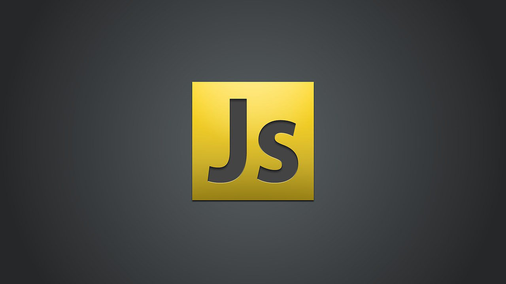

JavaScript – один из самых популярных языков программирования в мире. Он используется для создания интерактивных веб-страниц, мобильных приложений, в серверной разработке. Поддерживает объектно-ориентированный, императивный и функциональный стили. Является реализацией спецификации ECMAScript (стандарт ECMA-262).
JavaScript обычно используется как встраиваемый язык для программного доступа к объектам приложений. Наиболее широкое применение находит в браузерах как язык сценариев для придания интерактивности веб-страницам.
Вот примеры задач, которые решает JS:
- Взаимодействие с пользователем. Всплывающие окна с полем для ввода почты или других данных, уведомления об использовании cookie.
- Обработка данных HTML. JS помогает заполнить необходимые поля в формах, проверять буквенные и числовые значения, а также управлять HTML-элементами на странице.
- Математические вычисления. С помощью JS-скриптов на сайтах реализованы калькуляторы, например подсчет суммы заказа в корзине интернет-магазина.